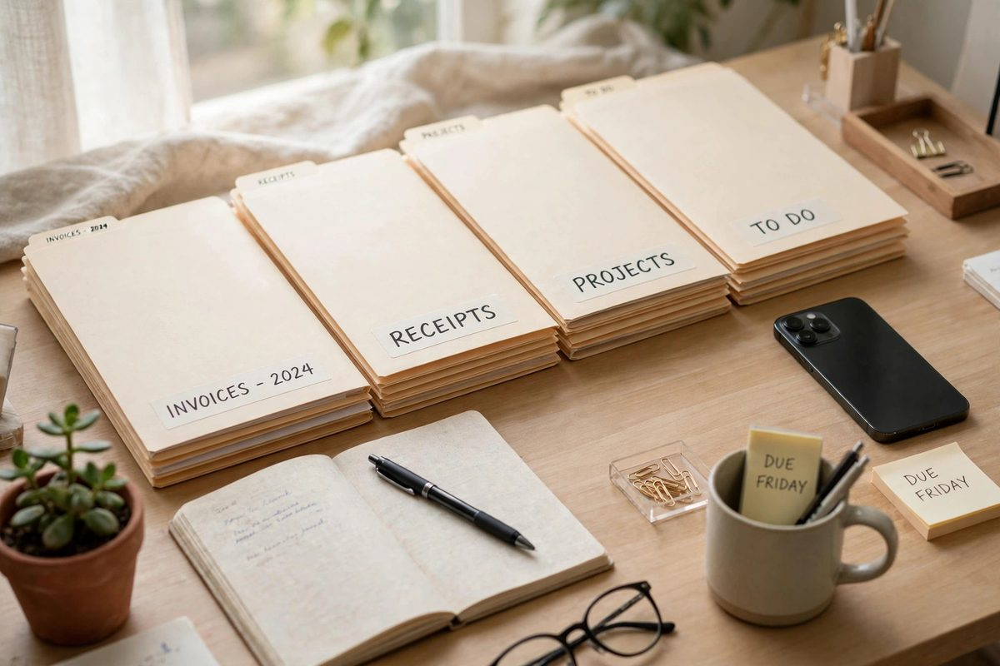

Instagram Saved Collections: Organise Everything You Save
Use Instagram collections to organise saved posts, Reels, and videos so you can actually find them again.
Saving a post is easy, but finding it again is the hard part. Instagram's Saved tab can hold hundreds of posts, and without organisation it becomes a pile you never search. Collections solve that: they are folders for your saved posts, and a few minutes of organisation makes everything you save genuinely useful. This guide explains how to set them up and keep them tidy.
Create your first collections
Open your profile, tap the Saved tab, and tap the plus icon to create a collection. Give it a clear name, such as Recipes to Try, Travel Ideas, or Workout Routines, and choose a cover image. When you save a post, Instagram asks which collection to add it to, so the organisation happens at the moment you save, when you still remember why the post mattered. A good starting set is five to eight collections covering your main interests.
Add and remove posts
To add a saved post to a collection, open the post and tap the bookmark icon, then choose the collection. To remove it, open the collection, tap the post, and tap the bookmark again. You can move a post between collections the same way. If a post was deleted by its creator, it disappears from your collection too, and there is nothing you can do about that, which is why important information, such as an address or a recipe, is worth copying into a notes app as well.
Review collections regularly
A collection you never review is just storage. Set a monthly reminder to open each collection, remove the posts you no longer need, and act on the ones you kept: cook the recipe, book the trip, try the workout. The point of saving is to use the content, not to hoard it. If a collection has more than 100 posts, split it into smaller ones, because a smaller collection is easier to browse and more likely to be used.
Collections for creators and businesses
If you run a business account, collections are a research tool: save competitors' posts, customer photos, and inspiration, organised by topic. You can also use collections to plan content, by saving posts with ideas you want to adapt, while being careful never to copy another creator's work. For personal accounts, collections are a private mood board, and they are one of the most underused features in the app.
Collections as a reading list
Collections work well as a reading list for things you want to learn. Create a collection called To Learn, and save tutorials, explanations, and how-to posts there as you find them. Once a week, open the collection, pick one post, and work through it properly, taking notes as you go. When you finish, move it to a Done collection or delete it, so the To Learn list only ever holds things you have not done yet. This turns idle scrolling into a small curriculum, and it works because the decision about what to learn was made when you saved the post, not in the moment when you are tired and tempted to keep scrolling. The same idea works for recipes, workouts, and travel plans: a collection is a promise to yourself, and the weekly review is how you keep it. A small collection you actually use is worth far more than a large one you never open.
Frequently Asked Questions
Are saved collections private?
Yes. Only you can see your Saved tab and your collections.
Can I share a collection?
You can share individual posts from a collection, but the collection itself is private to you.
How many collections can I make?
There is no practical limit. Make as many as you need, with clear names.